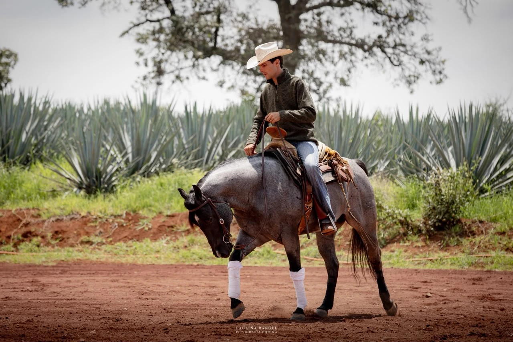

Rienda charra
Caballos de cala
La punta, los lados y los medios lados forman parte de la cala. En el archivo de Ale puedes ver cómo cambia el trabajo de una monta a otra.

Una sesión con Raptor
Rancho Los Mezquitez compartió el trabajo de este hijo de A Vintage Smoke con Alejandro Casillas.
Ver sesión en InstagramExplorar los ejemplares